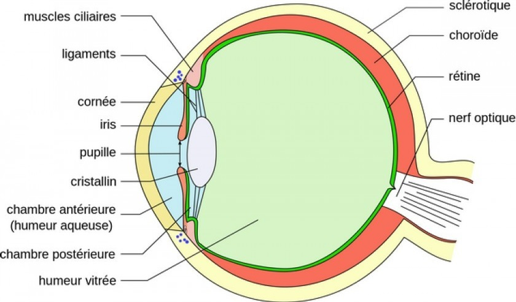
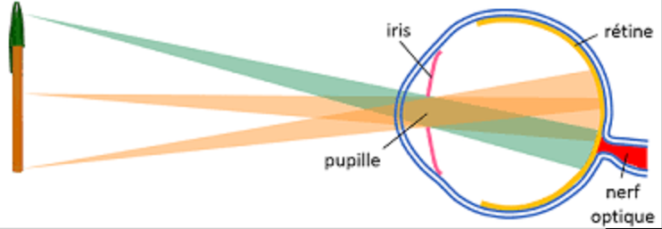
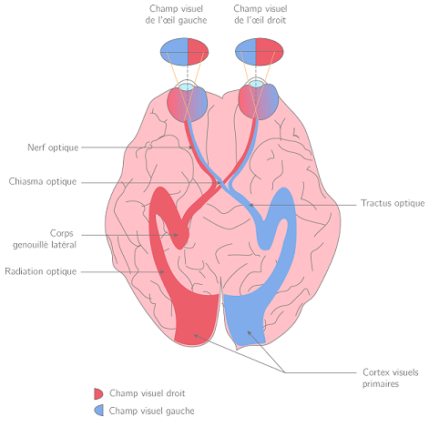
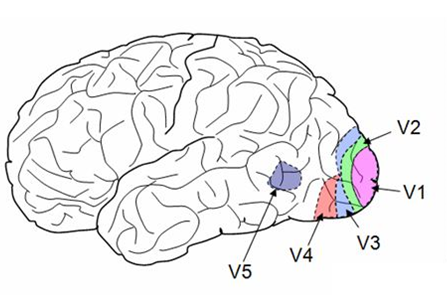

La vue est l’un de nos 5 sens. C’est ce qui permet de voir notre environnement. Mais avant d’expliquer comment les images se forment, on va d’abord s'intéresser à sa structure.
La structure de l'oeil
L’oeil, c’est compliqué. C’est composé de beaucoup trop de parties, alors on va essayer de faire simple.
Tout d’abord on a la sclère, c’est tout simplement le blanc de l’oeil. C’est une membrane très résistante, son rôle est de protéger ce qui se trouve à l'intérieur de l'œil. C’est la partie de l'œil qui est rattaché aux muscles dits oculomoteurs soient les muscles qui vous permettent de bouger les yeux dans tous les sens.
Ensuite on a la cornée, c’est ce qui se trouve sur le devant de l'œil, elle est transparente et son rôle est de laisser passer la lumière, sans ça, impossible de voir. La cornée est protégée par nos larmes et les clignements qui vont l’irriguer.
Si on commence à entrer dans l'œil, on tombe sur le cristallin. Pour vous donner une idée, le cristallin est semblable à une lentille. Vous vous rappelez, la cornée laisse passer la lumière. Et bien cette lumière lorsqu’elle rencontre le cristallin, elle va être redirigée pile sur la rétine. Mais du coup, pourquoi cette comparaison à la lentille? En fait, le cristallin est capable de modifier sa courbure constamment pour être sûr que la lumière tombe bien sur la rétine. C’est comme le focus des appareils photos.
Puis, plaquée au fond de l'œil, on retrouve la rétine rattachée au nerfs optique. Elle se compose de photorécepteurs : les cônes et bâtonnets que j’expliquerai un peu plus loin. La rétine va donc recevoir les signaux lumineux et les transformer en signaux transportables par le nerf optique.
Elle est donc composée d’environ 5 millions de cônes, qui s’occupent de la vision des couleurs, et d’environ 120 millions de bâtonnets qui captent les différences d'intensité de la lumière.
Le nerf optique, une fois que la rétine lui a transmis le signal lumineux, il va le transmettre à la zone du cerveau responsable de la vision.

Comment ça marche ?
En faite, on est incapable de voir sans une source de lumière. Cette source de lumière se réfléchit sur les objets qui nous entourent et viennent droit dans nos yeux.
La lumière va donc passer par la cornée qui va la diriger vers le cristallin. Le cristallin lui va modifier sa courbure pour faire en sorte que les signaux lumineux se dirigent vers la rétine.

Et au niveau du cerveau ?
Les zones cérébrales visuelles représentent près d’un tiers de notre cerveau. Et chaque zone à une tâche qui lui est propre.
Le message nerveux est donc acheminé par le nerf optique. Les nerfs optiques de chaque œil se rejoignent et forment une jonction que l’on appelle le chiasma optique. C’est là qu’il y a un partage de l’information, en effet une partie de l’information provenant l'œil droit va dans l’hémisphère gauche du cerveau et inversement. C’est ce qui permet la vision 3D.
Les messages nerveux continuent ensuite leur chemin jusqu’à être arrivés dans le cortex visuel.

Le cortex visuel qui se trouve à l'arrière du cerveau est composé de 5 aires visuelles : V1, V2, V3, V4 et V5. Ces aires ont leur propre rôle.
Le cortex visuel qui se trouve à l'arrière du cerveau est composé de 5 aires visuelles : V1, V2, V3, V4 et V5.
Ces aires ont leur propre rôle. Les aires V1 et V2 sont les plus importantes, elles s’occupent de la perception des contours. L’aire V3 analyse les formes en mouvement et les distances. L’air V4, la perception des couleurs et pour finir l’aire V5 les mouvements. Bien sûr, ces aires communiquent entre elles via les neurones.


Dans chaque œil, nous possédons ce qu’on appelle une tâche aveugle, c’est en fait le point de contact entre la rétine et le nerf optique. Et comme il n’y a aucun récepteur, cette zone de la rétine est donc aveugle. Faites le test ! Sur une feuille blanche, faites un point. Fermez un oeil, regardez droit devant vous et essayer de trouver ce point aveugle, si le point disparaît, BINGO.


Postez un commentaire !